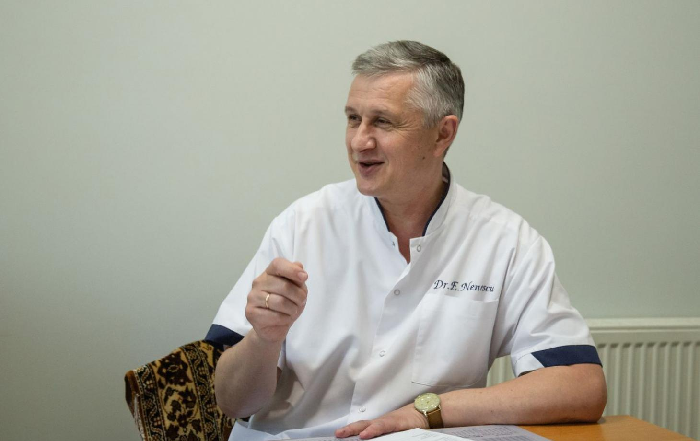

Mai hősnőnket Máriának hívják, képes abbahagyni az ivást és új életet kezdeni egy hosszú alkoholfüggőség után. Mint kiderült, Mária életét megkeserítette az alkoholizmus férje 2018-as elvesztése után. Részletesen mesélt olvasóinknak a problémájáról.
Riporter: Üdvözöljük, Mária! Nagyon örülünk, hogy itt köszönthetjük! Nagyon jól néz ki.
Mária: Köszönöm, örülök, hogy nem felejt!
Riporter: Meséljen, mégis mi történt? Súlyos beteg voltál. Jól tudjuk?
Mária: Sajnos igen, ez így van. Alkoholfüggőségben szenvedtem. De most már biztosan tudom, hogy ez egy betegség, és nem valami más. 2018-ban elvesztettem szeretett férjemet – Pétert, és az életem két részre bomlott: innentől volt "előtte és utána". Elkezdtem alkohollal elfojtani a fájdalmamat, hónapokig nem is hagytam el a házat, nem akartam beszélni a barátaimmal. Így telt el két év. A májam és a szívem súlyosan károsodott, a lábammal is gondok kezdődtek. Néha elvitt a mentő, infúzióra raktam a barátaim kérésére, akik mindennek ellenére mellettem voltak. Többször öngyilkos akartam lenni, de amikor a lányomra gondoltam, nem tudtam megtenni, cserbenhagyni.
Az alkohol gonosz, maga a halál, nem tudom, mi történt volna velem, ha nincsenek a barátaim. Valószínűleg már nem lennék.

Egy nap a születésnapomon a bátyám eljött hozzám. Megdöbbent, amikor ilyen állapotban látott engem. Évek óta nem láttuk egymást! Kristóf szó szerint rákényszerített, hogy menjek a tükörhöz, és nézzem meg magam. Éppen teljesen el voltam ázva, és még azt is elfelejtettem, hogy születésnapom van.
Belenéztem a tükörbe, és alig ismertem magamra. Nem én voltam a tükörben, hanem egy piszkos, duzzadt fejű, ijesztő alkoholista.
Mintha hirtelen észhez tértem volna. Két és fél év eltelt, mintha csak egy hónap lenne. Nem tudtam, milyen nap van, milyen nap. Csak akkor voltam magamnál, amikor a lányom Londonból hazajött. Amikor megérkezett, megpróbáltam tartani magam, de még akkor is becsempésztem magamnak egy italt, amikor nem látta.
Riporter: Hogyan került ki a függőség ördögi köréből? Hiszen most már vége az egésznek, nem?
Mária: Elkövettem egy gyakori hibát, amit az alkoholisták gyakran elkövetnek: nem akartam bevallani magamnak, hogy segítségre van szükségem, megígértem a barátaimnak, a családomnak és magamnak, hogy nem fogok inni. De ígérgetni könnyebb volt, mint betartani azt.
Kevesebb, mint három héttel később teljesen összetörtem. Körülbelül hat hónapig próbáltam letenni az italt, de nem sikerült. Klinikára semmiképp sem akartam menni, megmakacsoltam magam. Kristóf nem hagyott magamra engem ebben az állapotban, amiért nagyon hálás vagyok neki. Áthozta a holmiját, és velem élt. Minden nap reggelit készített nekem, finom kávéval ébresztett, sétával kezdtünk, és természetesen gondoskodott arról, hogy ne igyak.
De a legérdekesebb dolog az, hogy nem akartam inni! Mintha a bajom egy varázspálcával tüntették volna el! Sokat sétáltunk, beszélgettünk, még azt is elfelejtettem, milyen jó egyszerűen csak sétálni egy kedves emberrel! Újra élni kezdtem!

Szóval körülbelül két hónap telt el, míg felépültem. Kristóf születésnapján egy pohár pezsgőt adtak a kezembe. De még az alkohol finom illatától is annyira rosszul éreztem magam, hogy azonnal futottam a mosdóba! Azóta nem nyúltam alkoholhoz.
Aztán Kristóf bevallotta, hogy titokban elment az orvoshoz, aki adott neki egy készítményt, amit az ételembe és a kávémba is folyamatosan adagolt.
Eleinte sokkolt a dolog! Biztos voltam benne, hogy magam hagytam abba az ivást! De aztán elgondolkodtam, és rájöttem, hogy magam sosem hagytam volna abba az ivást.
Köszönöm a bátyámnak, és köszönöm Dr. Salai-nak, aki megmentette az életem.
Riporter:Dr. Salai Richárd is adott nekünk egy interjút: Jó napot kívánok, Doktor Úr! Először is nagyon örülök Máriának, hogy ma egészségesnek láthattam! Mondja el nekünk, miért olyan nehéz egyedül abbahagyni az ivást, és miért ismerik be olyan nehezen a függő emberek a problémájukat?
Richárd: Sajnos ez így van, leggyakrabban a betegeim nem ismerik be, hogy betegek. Mária sem akarta sokáig belátni. Az alkoholfüggőség egy betegség, és szinte lehetetlen megszabadulni tőle egyedül, önállóan, szakképzett segítség nélkül.
Ha alkoholista van a családban, az nagy bánat. A részegség nemcsak a fizikai testet öli meg, hanem a személyiséget is elpusztítja. Ez már nem az az ember, akit ismertünk és szerettünk. Számukra az alkohol van az első helyen, és minden más érzés, függőség, kapcsolat elveszíti a jelentőségét. Az alkoholista készen áll akár ölni is egy üvegért. És ez nem egy metafora, hanem maga az igazsága. Az ilyen esetek, sajnos, gyakoriak. A legtöbb bűncselekményt alkoholos befolyásoltság alatt követik el.
És a női alkoholizmust, mint tudjuk, általában nehezebb kezelni. A nők beteg gyermekeket szülnek, megfosztják őket a szülői jogoktól, a gyermekek az anyák gondatlansága miatt halnak meg.
Először az agy szenved, majd a szív, a máj, a vesék és más szervek. A statisztikák szerint azok az emberek, akik több mint két éve isznak, maximum még 10 évig ha élnek. Gyakran meghalnak a májcirrózis, a szívroham, a stroke, a veseelégtelenség vagy az alkoholfogyasztás miatt.
Riporter:Mária, szóval nem is tudta, hogy kezelés alatt állsz?
Mária: Nem, nem is gondoltam volna... Az egyetlen dolog, ami furcsa volt, hogy még soha nem jöttem ki ilyen könnyen az italozástól. Pár nap múlva jól is éreztem magam, és már nem is vonzott az ivás. Miután jobban éreztem magam, több foglalkozáson is részt vettem egy terapeutával, hogy biztosra menjek, és tartós legyen az eredmény. De úgy gondolom, hogy a pszichoterápia önmagában nem elég, speciális eszközök nélkül nem lennék most józan.
Riporter: Úgy döntöttünk, hogy kikérjük Jakab Tibor, pszichoterapeuta véleményét is. Doktor Úr, mit gondol, a pszichoterápia önmagában elegendő az alkoholfüggőség kezelés során, vagy nem elég hatásos gyógyszeres kezelés nélkül?

Jakab Tibor: Mária jól mondta. Az alkoholizmusnak különböző esetei és szakaszai vannak. A pszichoterápia nem mindig segít, nem olyan, mint a programozás, vagy mint a gyógynövények, stb. Az ivásról való leszokás nagyon nehéz. Ennek számos oka van:
1. Az alkohol hatással van az agy neuronjaira, mesterségesen növeli a "boldogság hormon", a dopamin szintjét, és alkoholos eufóriát okoz.
2. A rendszeres alkoholfogyasztással fokozódik ennek a hormonnak a termelése. Ez a folyamat észrevehetetlen az emberek számára, így a legtöbb alkoholista nem ismeri fel, hogy függő, és megtagadja a kezelést, mondván, nincs rá szüksége, ő nem beteg.
3. Amikor az alkoholról való lemondás inkább kényszer, mint önálló döntés, egy idő után a függő elkerülhetetlenül újra az italhoz nyúl.
A programozás és a gyógyszerek itt nem működnek. És miért kellene feltalálni egy kerékpárt, amikor vannak olyan modern és biztonságos szerek, amelyek rövid idő alatt megszabadíthatják az alkoholfüggőségtől. A teljes kúra után 10-15 pszichoterápiás ülésen érdemes részt venni az eredmény megszilárdítása érdekében.
Riporter: Milyen szerekről beszél?
Jakab Tibor: “”. A készítmény, amit Mária bátya adagolt Mária ételébe is italaiba. De jobb, ha a kollégám mesél róla:
Richárd:A “” készítményt javasoltam Mária bátyának, ez messze a leghatékonyabb megoldás az alkoholfüggőség kezelésére, és teljesen természetes összetevők alkotják, így otthon is könnyedén használható. Ezek olyan cseppek, amelyeknek nincs sem íze, sem szaga, így észrevétlenül hozzáadhatók az ételekhez vagy italokhoz.
Riporter: Mi ez a szer és hogyan működik?
Richárd: A “” természetes kivonatok komplexe egy hatékony formulában összegyűjtve. A tintagomba (coprinus) tartós ellenszenvet idéz elő az alkohollal szemben, miközben a testet aminosavakkal és vitaminokkal telíti el, helyreállítja a a gyomor-bél traktus munkáját és természetes enzimeket biztosít a szervezet számára.
Az ezerjófű (centaurium) kivonata segít eltávolítani a méreganyagokat és a bomlástermékeket, megtisztítja a vért, segít enyhíteni az elvonási tüneteket. A Tinospora nyugtató hatással van az idegrendszerre, és segít helyreállítani az alvást és meghozza az étvágyat. Az ezerjófű segít megtisztítani a májat és a veséket, megakadályozza a cirrózis kialakulását.
Ez egy olyan fejlesztés, amely valódi szenzációvá vált, és számos díjat is kapott különböző nemzetközi fórumokon. Hála ennek a szernek, több ezer ember már megszabadult az alkoholfüggőségtől, és józan, egészséges életet él alkohol nélkül. Nézzék csak meg a betegeimnek, akik a “” segítségével megszabadultak az alkoholfüggőségtől. Ez egy csodálatos átalakulás, nem de? Csak néhány kúrányi kellett ahhoz, hogy örökre megszabadulhassanak a függőségtől, és teljesen új, egészséges életet éljenek, alkohol nélkül.

Márkó. Több mint 10 évig szedte. Megszabadult a függőségtől a “” segítségével, és 2 éve józan életet él.
Patrícia. Több mint 5 évig szedte. A segítségével visszatért a normális életbe. Talált munkát, megházasodott, babája született.

Lukács. 6 évig szedte. Három éve józan és megnyitotta saját üzletét.

Izsák. Felesége halála után majdnem 15 évig ivott. Legyőzte a függőséget a segítségével. Munkát kapott, és három éve józan.
A “” néhány szakaszban fejti ki hatását:
-
1. Kijózanít, megszünteti a az elvonási tüneteket, blokkolja az alkoholfogyasztás utáni jelentkező depressziót.
-
2. Tartós alkoholintoleranciát alakít ki mind fizikai, mind pszichológiai szinten.
-
3. Elpusztítja a függőségért felelős idegi kapcsolatokat az agyban.
-
4. Csökkenti az agressziót, enyhíti az apátiát, javítja a pszicho-érzelmi állapotot.
-
5. Enyhíti az alkoholfogyasztás okozta mérgezést, regenerálja a szervek és a testrendszer munkáját.
-
6. Örökre megszünteti az alkoholfüggőséget, megakadályozza a visszaesést.
Ezért a legtöbb narkológus ezt a gyógymódot választja, ezt tartják a legbiztonságosabbnak és leghatékonyabbnak. A “” az alkoholfüggőség minden szakaszában hatékony, és a lehető legrövidebb időn belül segít meggyógyulni. A használat során a szer tartós ellenszenvet alakít ki az alkohollal szemben. A betegnél intolerancia alakul ki az alkohol szagával szemben, hányingert okoz, és egy idő után már egyáltalán nem kívánja az alkoholt.
Az tesztek rendkívül nagy hatékonyságot mutattak a készítményt szedő tesztalanyoknál. Az adatok a képernyőn láthatók:
Egy konferencia keretében bemutattuk egy tanulmány eredményeit az orvosközösségnek:
-
A posztalkohol-szindróma megszűnése a szedés megkezdése napján - az alanyok 100%-ánál.
-
Alkoholintolerancia a kúra végére - a tesztalanyok 98%-ánál.
-
A vérnyomás normális szintre állt be - a résztvevők 95%-ánál.
-
Az alvás helyreállása - a résztvevők 100%-ánál.
-
A mentális állapot helyreállása- a tesztalanyok 98%-ánál.
-
Az általános jólét javulása: a résztvevők 90%-ánál.
Riporter: Kiváló orvosság, magabiztos, sok embernek segít leküzdeni az alkoholfüggőséget.
Oscar Campos:I A “” sajnos gyógyszertárakban nem kapható. Minden vizsgálaton sikeresen teljesített, az összes szükséges tanúsítványt megkapta. De még nem sikerült megállapodni az árról. A gyógyszertárak nem akarják elfogadni a gyártó által kínált összeget, a gyógyszerészek pedig túl magas árat akarnak. Mindannyian tudjuk, hogy a gyógyszerészet csak egy üzlet. Szóval, hogy mikor a gyógyszertárakba történő szállítás megkezdődik, sajnos nem tudom megmondani.
De vannak jó híreink is! A “” gyártója részt vesz a "Józan ország" társadalmi programban, és hivatalos nyereményjáték keretében értékesíti a készítményt. Az ország minden felnőttkorú lakosa részt vehet a nyereményjátékban, és kedvezményhez juthat, amelyet felhasználhat a termék megvásárlásánál. Ne hagyja ki ezt a lehetőséget, az akció nem tart sokáig.
Figyelem! A tudósok azt találták, hogy augusztus a legkedvezőbb idő, hogy abbahagyja az ivást. A nap tevékenységének köszönhetően a sejtek anyagcseréje 8-szorosára javul, és a függőségtől való megszabadulás gyorsabb és könnyebb.
FIGYELEM: Az akció keretében a “” akár 50% -os kedvezménnyel is beszerezhető. Ehhez ki kell nyitni egy kedvezménydobozt, és ki kell töltenie az alább közzétett megrendelőlapot, -ig (az utolsó napot is beleértve). Az akciós termékek csak korlátozott mennyiségben kaphatók. Csak két próbálkozása van!
HOZZÁSZÓLÁSOK: